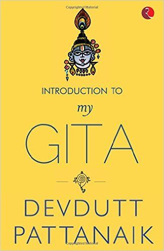

My Gita

"Arjuna, you can choose actions, not reactions. Do not choose action because of the reactions. Do not choose inaction either.
- para-phrased from Bhagwad Gita.
“Within infinite myths lies the eternal truth
Who sees it all?
Varuna has but a thousand eyes,
Indra has a hundred,
You and I, only two.”
About the author
Verbatim as they had it on goodreads.com Dr. Devdutt Pattanaik (born December 11, 1970) is an Indian physician turned leadership consultant, mythologist and author whose works focus largely on the areas of myth, mythology, and also management.
He is the Chief Belief Officer of Future Group, one of India’s largest retailers, bringing the wisdom of Indian mythology into Indian business, especifically in human resource management. He also writes a column for the newspaper MID DAY.
My encounter
I happen to listen to Dr. Devdutt Patnaik from a TV show Devlok with Devdutt Patnaik aired on EPIC Channel. I got impressed with his knowledge and understanding of Indian Mythology. The clarity with which he expresses his understanding of the subject was brilliant. I tried not to miss any of the episodes for that show. This was my encounter with “Dr. Devdutt Patnaik”.
And the book “My Gita”.
I happen to find this book in “Amazon Kindle Unlimited”. I thought of this book as it would be about Gita, but when saw the name of the author, my interest doubled. When I bought this book, I was reading Mastery and the moment I finished with Mastery I started with this book.
“Bhagwad Gita” as we know is the discourse given to Arjuna by Krishna before the war of Kuru-kshtera was about to begin. In, “My Gita” the author clearly explains that this book may not be a mere narration of “Bhagwad Gita” but would be of his understanding.
In “Bhagwad Gita”, we never heard what Krishna told Arjuna, what we know is what we overhear Sanjay telling the king “Dhritrastra”, with his telepathic vision.
The initial explanation goes in defining the authors understanding of Gita while he also tries to explain “How the reader should perceive it?” In the coming chapters he tries to capture the moment of Arjuna’s dilemma and Krishna’s wise words.
While the book is not limited to Gita, it also tries to encapsulate the origin of the civilization and Hindu religion as it is known to us today. The author tries to put the foundation of civilization and their merging with Hinduism. The initial chapters of the books give us a clear insight of how things would have been when Civilization would have started. We already relate our mythologies of “Lord Vishnu’s” Dashavatra with Charles Darwin’s book Theory of evolution which is quite coincidental as well.
The authors explanation of the wisdom spread across “Bhagwad Gita” and its relation with today’s circumstances is remarkable.He clearly mentions that “With this book” this is how I am perceving Gita, and these are the circumstances where undersntanding of Gita can help you immensely. Towards, the end of the book as well as Krishna’s words of Gita to Arjuna, you will start to feel how well it suits in today’s managerial scenarios as well. It surely open ups all the insights of the Meeting rooms and the discussions which could take place. Don’t be surprised while during the course of completion of the book and in the between chapters you will feel a sudden stroke of enlightenment and clarity. Though, this books was authors understanding, but for me I found something hidden in me. An inseparable knowledge and motivation. I would recommend everyone to read this, if you don’t want to go ahead and read “Bhagwad Gita”. Remind me to keep this in my reading list, and My gita in itself is a synopsis of what Gita is in its Full form.
This book has nothing to do with religion and as you go along with the book you will understand its more about finding yourself and doing the right thing.
“As long as we seek validation from the world around us, we are entrapped by aham. As soon as we realize that all meaning comes from within, that it is we who make the world meaningful, we are liberated by atma”. There could not be a better explanation of what My Gita is all about.
- End.